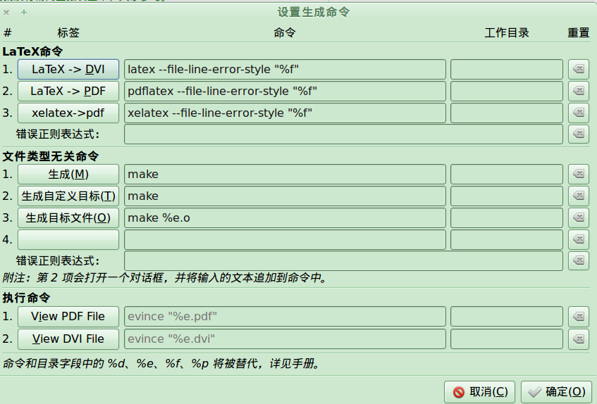

自定义nautilus的菜单栏
Nautilus是gnome的默认文件浏览器, 那次更新安装了elementory主题的Nautilus之后, 发现菜单栏少了些很常用的功能: 比如上一层,主页, 刷新等...
其实可以自定义的, 编辑->customize toolbar:

顺便提一下, 发现了些方便的快捷键: alt+up: 父目录 alt+left: 返回 ~~alt+home: 到~/~~(不好使?) F2: 重命名 F5/ctrl+R: 刷新 ctrl+L: 输入位置地址 ctrl+H:显示隐藏文件
--imported from zim
more ...
tex插入程序代码--so easy~
这个问题... 我本来想用python解决的...
但是显然应该先搜一下吧... 果然, 早就有人解决了(其实是tex的常用命令里就有的), 比如这里...
\usepackage{listings} \lstset{language=C++}%这条命令可以让LaTeX排版时将C++键字突出显示 \lstset{breaklines}%这条命令可以让LaTeX自动将长的代码行换行排版 \lstset{extendedchars=false}%这一条命令可以解决代码跨页时，章节标题，页眉等汉字不显示的问题 \begin{lstlisting} %paste your C++ code here \end{lstlisting}
很简单的... 不过比较长的代码换行显示不是很爽(貌似不换行也不是办法啊)... 另外没有颜色高亮哎...
嗯, 貌似这里的介绍更详细... 还有这个人的博客... 这篇文章是针对python的高亮 ...
more ...xelatex--linux下tex中文的完全解决!
前几天校内上看见了这个latex中文指南, 想试一试...
可是貌似不给力(or我没做对)安装了texlive之后还是不能编译它的测试源文件...
搜索发现了这样一篇非常强大的文章... 这货直接把他的源文件放上去了... 不过这样的话他的文章可读性就不好了...
要进行的操作:
sudo apt-get install texlive-xetex latex-cjk-xcjk texlive-latex-recommended
其实好像这样之后就可以用中文了(按博客里的意思), 可惜我用的geany开始使用latex编译的, 老是报错...
其实应该用命令行 xelatex xx.tex就应该好使了...
然后我又按照博客里的提示安装了Gummi...... 一个可以在右面看到效果的texIDE... 还是不行, 因为默认的编译器都是latex不是xelatex...
当然我最终发现了要用xelatex, 那么老是用命令行也不大方便... gummi里面找到了设置:

这样就好了...
但是我现在已经非常喜欢geany了, 不想因为tex再单独用一个编辑环境... 还好找到了geany里面的设置: 生成-->设置生成命令, 在里面添加一个xelatex就行啦!~ 嗯 还是geany亲切~!

最后把源文件生成好的pdf也放进来吧... ./xelatex_test ...
more ...